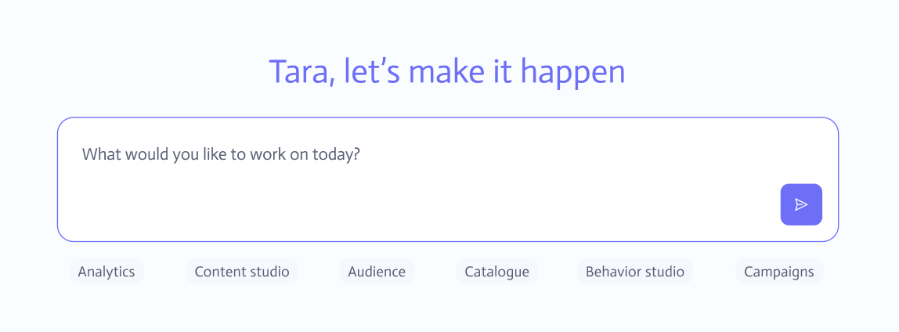
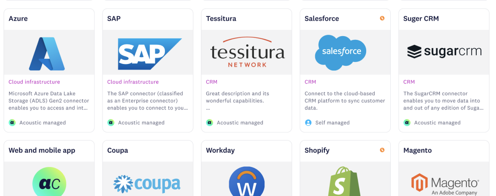

Case studies
2021 to 2026AI homepage
Jumped in shortly after conception, took baseline requirements, and turned it into a full-blown feature in 30 days. A massive collaborative effort that crossed the finish line as a differentiator and success.


Pulse mobile app
From AI audit to production. A vision brought to life as the first ever Acoustic Mobile App, combining cutting-edge audio technology with an intuitive, consumer-grade mobile experience.
View case study ↗
3rd-party integrations
End-to-end capability. Complete with proven, repeatable templates for faster implementation, turning complex integrations into a differentiating feature rather than a technical burden.
View case study ↗
Advanced user permissions & brand settings
Conceptualized and built out an entire advanced user permission and brand settings suite, complete with a composer, saving high-risk churn and turning admin complexity into a competitive advantage.
View case study ↗